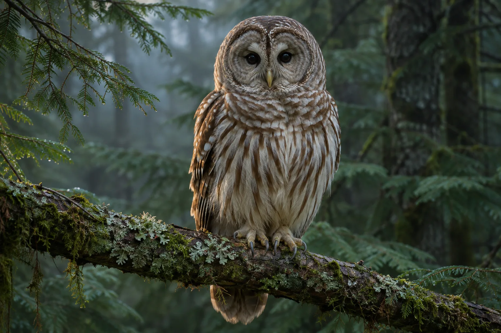

01 / Listen
Hear a call.
Pick out wildlife sounds in the field.
WildGuard brings wildlife sounds, images, and sightings together in a field log you can return to.

Simulated encounter
A fly-in, a call, and a field record. Animated scene with synthesized audio.
01 / Listen
Pick out wildlife sounds in the field.
02 / See
Look at the visual evidence behind a sighting.
03 / Understand
Review encounters and see patterns over time.
Explore observations, review trends, and see what you can keep private.
Different settings call for different ways to notice, record, and understand wildlife.
Review what you heard or saw and keep a record of encounters along the trail.
WildGuard is designed for hands-free roadside awareness. The workspace shows how encounters could be reviewed after a drive.
Explore patterns in observations without exposing personal records. Live research access will require consent and authorization.
How WildGuard handles evidence, works offline, and keeps sharing in your hands.
Review the sound or image behind an identification and keep uncertain sightings marked as uncertain.
Yes. The demo works offline when opened from local files.
Live sensors and alerts aren’t connected in this demo. The observations are fictional.
The demo loads its assets locally and uses fictional observations. It does not request sensor access or upload your activity. Changes to preferences stay in this session.
For live research access, the planned design requires explicit consent and authorization. The demo does not connect to personal accounts or research systems.